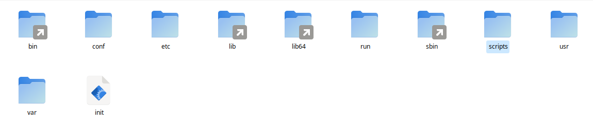

initramfs-tools¶
initramfs-tools, Debian tabanlı sistemlerde kullanılan bir araçtır ve initramfs (initial RAM file system) oluşturmak için kullanılır.
Derleme¶
#--------------------------------------------------------------------------------------------------------------------
#!/usr/bin/env bash
version="0.142"
name="initramfs-tools"
depends="glibc,readline,ncurses"
description="initramfs generate sağlayan paket"
source="https://salsa.debian.org/kernel-team/initramfs-tools/-/archive/v$version/initramfs-tools-v$version.tar.gz"
display=":$(ls /tmp/.X11-unix/* | sed 's#/tmp/.X11-unix/X##' | head -1)" # Display adı
user=$(who | grep "(${display})" | awk '{print $1}') # Display kullanıcısı
ROOT="/home/$user/distro"
ROOTBUILDDIR="$ROOT/build" # Derleme dizini
BUILDDIR="$ROOT/build/build-${name}-${version}" # Alt dizin
DESTDIR="$ROOT/rootfs" # Yükleme dizini
PACKAGEDIR=$(pwd) # Paket dizini
SOURCEDIR="$ROOT/build/${name}-${version}" # Kaynak dizini
initsetup(){
mkdir -p $ROOTBUILDDIR #derleme dizini yoksa oluşturuluyor
rm -rf $ROOTBUILDDIR/* #içeriği temizleniyor
cd $ROOTBUILDDIR #dizinine geçiyoruz
wget ${source}
for f in *\ *; do mv "$f" "${f// /}"; done #isimde boşluk varsa silme işlemi yapılıyor
dowloadfile=$(ls|head -1)
filetype=$(file -b --extension $dowloadfile|cut -d'/' -f1)
if [ "${filetype}" == "???" ]; then unzip ${dowloadfile}; else tar -xvf ${dowloadfile};fi
director=$(find ./* -maxdepth 0 -type d)
directorname=$(basename ${director})
if [ "${directorname}" != "${name}-${version}" ]; then mv $directorname ${name}-${version};fi
mkdir -p $BUILDDIR&&mkdir -p $DESTDIR&&cd $SOURCEDIR
}
setup() {
cp -prfv $PACKAGEDIR/files/* $SOURCEDIR/
patch -Np1 < $SOURCEDIR/patches/remove-zstd.patch
patch -Np1 < $SOURCEDIR/patches/remove-logsave.patch
patch -Np1 < $SOURCEDIR/patches/non-debian.patch
}
build() {
echo ""
}
package() {
cat debian/*.install | sed "s/\t/ /g" | tr -s " " | while read line ; do
file=$(echo $line | cut -f1 -d" ")
target=$(echo $line | cut -f2 -d" ")
mkdir -p ${DESTDIR}/$target
cp -prvf $file ${DESTDIR}/$target/
done
# install mkinitramfs
cp -pvf mkinitramfs ${DESTDIR}/usr/sbin/mkinitramfs
sed -i "s/@BUSYBOX_PACKAGES@/busybox/g" ${DESTDIR}/usr/sbin/mkinitramfs
sed -i "s/@BUSYBOX_MIN_VERSION@/1.22.0/g" ${DESTDIR}/usr/sbin/mkinitramfs
# Remove debian stuff
rm -rvf ${DESTDIR}/etc/kernel
install $SOURCEDIR/zzz-busybox ${DESTDIR}/usr/share/initramfs-tools/hooks/
install $SOURCEDIR/modules ${DESTDIR}/usr/share/initramfs-tools/
install $SOURCEDIR/modules ${DESTDIR}/etc/initramfs-tools/
mkdir -p ${DESTDIR}/usr/share/initramfs-tools/conf-hooks.d
install $SOURCEDIR/conf-hooks.d/busybox ${DESTDIR}/usr/share/initramfs-tools/conf-hooks.d/
mkdir -p ${DESTDIR}/etc/initramfs-tools/scripts
${DESTDIR}/sbin/ldconfig -r ${DESTDIR} # sistem guncelleniyor
}
initsetup # initsetup fonksiyonunu çalıştırır ve kaynak dosyayı indirir
setup # setup fonksiyonu çalışır ve derleme öncesi kaynak dosyaların ayalanması sağlanır.
build # build fonksiyonu çalışır ve kaynak dosyaları derlenir.
package # package fonksiyonu çalışır, yükleme öncesi ayarlamalar yapılır ve yüklenir.
Ek dosyaları indirmek için tıklayınız. Paket Derleme Yöntemi konusunda anlatıldığı gibi derleme işlemini yapınız.
initramfs-tools Ek Ayarları¶
/etc/initramfs-tools/modules¶
modules dosyası initrd oluşturulma ve güncelleme sırasında ek modullerin eklenmesisini gerekbilir. initrd açıldığında modülün yüklenmesini istiyorsak /etc/initramfs-tools/modules komundaki dosyayı aşağıdaki gibi düzenlemeliyiz. Bu dosya içinde ext4, vfat ve diğer yardımcı moduller eklenmiş durumdadır.
#--------------------------------------------------------------------------------------------------------------------
vfat
fat
nls_cp437
nls_ascii
nls_utf8
ext4
initramfs-tools Ayarları¶
/usr/share/initramfs-tools/hooks/ konumundaki dosyaları dikkatlice düzenlemek gerekmektedir. Dosyaları alfabetik sırayla çalıştırdığı için busybox zzz-busybox şeklinde ayarlanmıştır.
initrd Oluşturma/Güncelleme¶
Sistemin initrd.img dosyasının güncellenmesi/oluşturulması için çalıştığınız sistemde aşağıdaki komutlarla yapılabilir.
/usr/sbin/update-initramfs -u -k $(uname -r) #initrd günceller
Eğer bir dizin içinde bir sisteme initrd oluşturulacaksa, yani chroot ile sisteme erişiliyorsa yukarıdaki komut yeterli olmayacaktır. chroot öncesinde sistemin dev sys proc run dizinlerinin bağlanılması gerekmektedir. Dikkat edilmesi gereken en önemli noktalardan biriside bu komutlar root yetkisiyle çalıştırılmalıdır.
#--------------------------------------------------------------------------------------------------------------------
rootfs="$HOME/distro/rootfs"
distro="$HOME/distro"
# Sisteme bağlanıyor
for dir in /dev /sys /proc /run /tmp; do
mkdir -p $rootfs/$dir
mount --bind /$dir $rootfs/$dir
done
### update-initrd
fname=$(basename $rootfs/boot/config*)
kversion=${fname:7}
mv $rootfs/boot/config* $rootfs/boot/config-$kversion
cp $rootfs/boot/config-$kversion $rootfs/etc/kernel-config
#sistemden ayırılıyor
chroot $rootfs update-initramfs -u -k $kversion
for dir in /dev /sys /proc /run /tmp; do
umount -lf -R $rootfs/$dir 2>/dev/null
done
#### Copy initramfs
cp -pf $rootfs/boot/initrd.img-* $distro/iso/boot/initrd.img
Güncelleme ve oluşturma aşamasında /usr/share/initramfs-tools/hooks/ konumundaki dosyarı çalıştırarak yeni initrd dosyasını oluşturacaktır. Oluşturma /var/tmp olacaktır. Ayrıca /boot/config-6.6.0-amd64 gibi sistemde kullanılan kernel versiyonuyla config dosyası olmalıdır. Burada verilen 6.6.0-amd64 örnek amaçlı verilmiştir.
initrd açılma Süreci¶
Sistemin açılması için vmlinuz, initrd.img ve grub.cfg dosyalarının olması yeterlidir. initrd.img sistemin açılma sürecini yürüten bir kernel yardımcı ön sistemidir. initrd.img açıldığında aşğıdaki gibi bir dizin yapısı olur. Bu dizinler içindeki script dizini çok önemlidir. Bu dizin içindeki scriptler belirli bir sırayla çalışarak sistemin açılması sağlanır.


initrd script İçeriği¶
script içerindeki dizinler aşağıdaki gibidir. Bu dizinler içinde scriptler vardır. Bu dizinlerin içeriği sırayla şöyle çalışmaktadır.
init-top
init-premount
init-bottom

Oluşan initrd.img dosyası sistemin açılmasını sağlayamıyorsa script açılış sürecini takip ederek sorunları çözebilirsiniz.